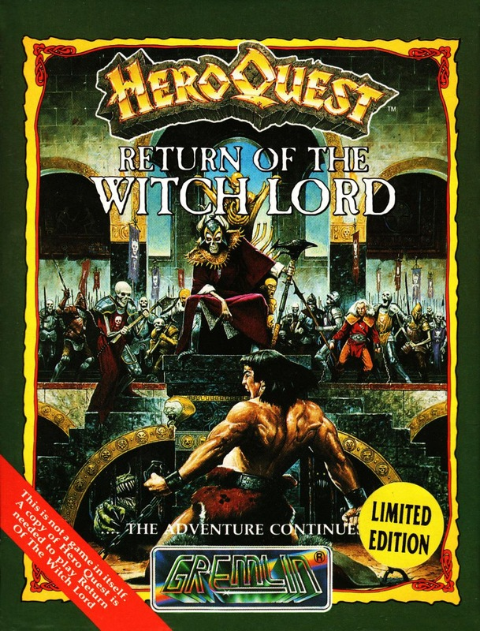
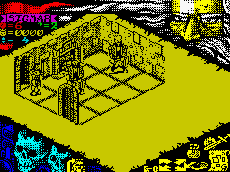

Return of the Witch Lord


{kind=link}

| Publisher: | Gremlin |
| Price: | £5.99 / £7.99 |
| Year: | 1991 |
| Source: | CRASH, Issue 92 |

Hullo, what’s this? It’s not a game in itself (not at that strange price, anyway). It must be an expansion pack. And, it is! MARK CASWELL gets into some additional HeroQuest dungeon dilemmas!

Now, don’t go thinking this is just a cheap way of playing the HeroQuest game because it isn’t. To play the new adventures you need the original HeroQuest game and have to buy it on the same media (ie, players who have HQ on tape need the tape version of Witchlord, and disk players need the disk version.
Gremlin advise that you use a saved character from HeroQuest because the new missions are a darn sight tougher (a very slight understatement).
Morcar, the evil dungeon master, is still lurking around but so are the four brave heroes: Messrs Stumpy the Dwarf, Eric the Elf, Arnie the Barbarian and Wizzy the Wizard (as named by me, of course).

plenty of strength
The game starts much the same as HeroQuest with you choosing characters, buying supplies (if you have any gold left over from previous games) and choosing spells for the Elf and Wizard.
Ten new missions are on offer here: The Gates Of Doom, The Cold Halls, The Silent Passages, Halls Of Vision, The Gate Of Bellthor, Halls Of The Dead, The Forgotten Legion, The Forbidden City, The Last Gate, and the last and most difficult, The Court Of The Witch Lord.
General gameplay is unchanged, as are the attacking hordes. although there do seem to be more of them. One change I noticed is the static screen that appears when a character is attacked. Each creature and adventurer has their own full colour ‘you have been wounded, you clumsy prat’ screen, which is very pretty indeed.
As this is an extension of HeroQuest rather than a true sequel, I can’t add a great deal to the original review. But these extra missions are greatly appreciated as I’d solved most of the quests in the original game. So, go and buy it (it’s as simple as that, really).
MARK
RATING
Ten more excellent adventures for HeroQuest addicts
| Presentation: | 85% |
| Graphics: | 90% |
| Sound: | 80% |
| Playability: | 91% |
| Addictivity: | 89% |
| Overall: | 90% |